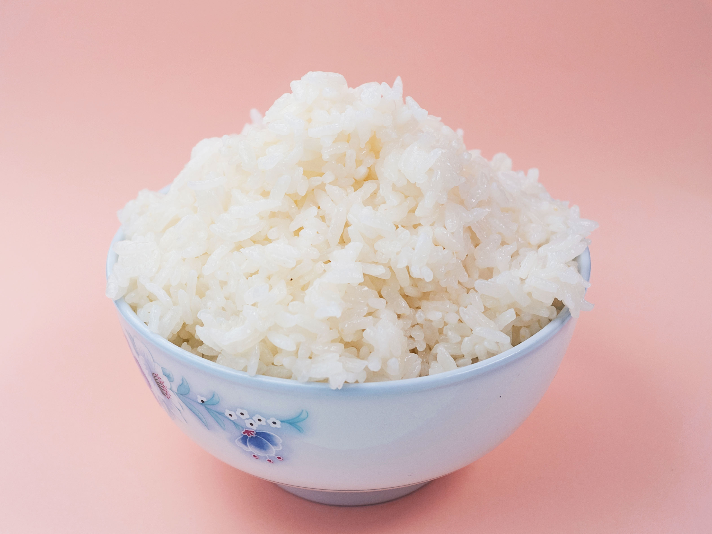

Recettes Riz

Description
Risotto aux asperges fraîches
40 min environs de préparation
Ingrédients
Pour plus de détails sur la recette, veuillez visiter le site :
Site marmiton
recette riz
- 1 botte d'asperge verte ou violette plutôt fine
- 300 g de riz pour risotto type Arborio
- 50 g de beurre + 1 noix de beurre
- 1 oignon ou 2 échalotes au choix
- 15 cl de vin blanc
- 100 g de Parmesan ou grana râpé fin
- Sel
- Poivre blanc
- 1 l de bouillon de légumes
Étapes
- Préparer les asperges en cassant le bas de l'asperge d'un coup sec (c'est la partie plus dure), les peler si nécessaire.
- Couper en tronçons en réservant les pointes.
- Faire fondre le beurre et y mettre à suer les échalotes ou l'oignon finement coupés.
- Ajouter les asperges (sans les pointes) et faites cuire doucement pendant 5 minutes.
- Ajouter le riz et remonter le feu.
- Verser le vin blanc.
- Verser le bouillon de légumes chaud (c'est important) en 3 fois que l'on ajoute à chaque fois qu'il est absorbé.
- Le riz ne doit pas être croquant mais crémeux, ne pas trop saler, bouillon vin et fromage le feront.
- A mi-cuisson on ajoute les pointes d'asperges. Goûter pour vérifier la cuisson du riz et poivrer, puis verser le
parmesan râpé fin et noix de beurre et bien mélanger pour qu'il fondent.
- Servir très chaud.
Retourner à l’accueil